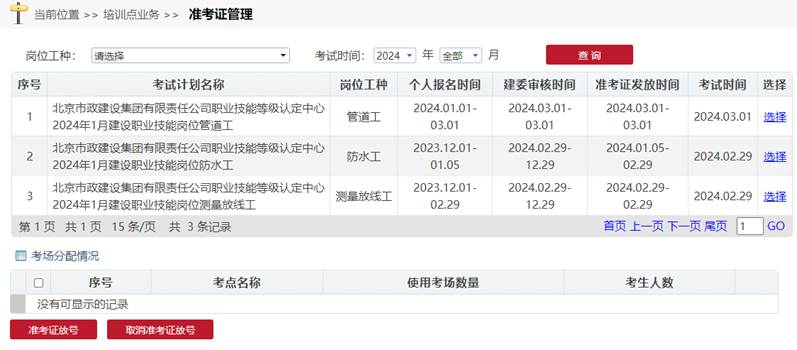
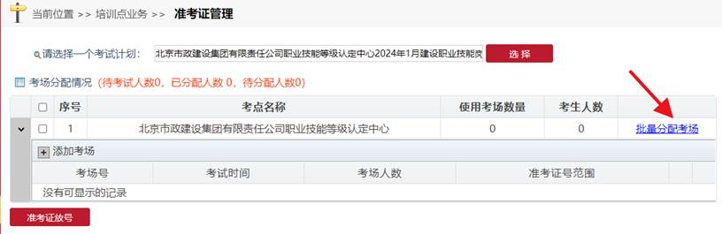
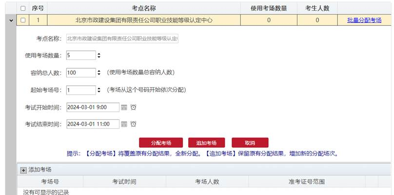
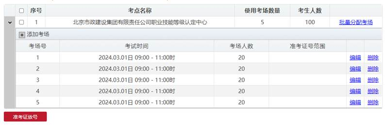
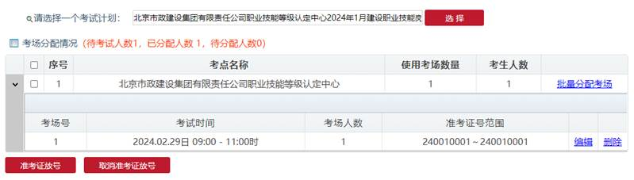

依次点击：培训点业务》准考证管理，进入管理页面，如图
选择一个考试计划

点击批量分配考场可以批量设置考场（平均分配人数）、然后在修改个别考场。

这里可以点击批量分配考场连接进行批量分配或点击添加考场进行逐个添加。

录入使用考场数量、容纳总人数、起始考场号、考试时间，点击分配考场按钮进行分配考场，
或点击追加考场进行补充考场。

可编辑或删除已分配的考场。
点击准考证放号按钮，可以进行准考证放号。
点击取消准考证放号，可取消放号，对考场重新分配后再次放号。
放号后个人登录建委系统可下载准考证。
